AI operations command centers
One place to direct work, see progress, resolve blockers, review evidence, and approve release.
A complete view of what I can design and what I have built: the working systems, the interfaces behind them, and the boundaries that keep the work dependable.
Using the Orrery architecture, I can design systems around the way a business actually works, with authority and release kept in human hands.
The goal is dependable autonomy: systems that can act, learn, and improve inside clear boundaries while the owner retains authority over strategy, spending, sensitive information, and final release.
These screenshots are from products and systems I built for my own work. Project links stay off this page except for Three Mountaintops.
A relational novelist workspace for manuscripts, characters, world data, maps, and AI intake, paired with semantic search and cited answers over the private writing corpus.

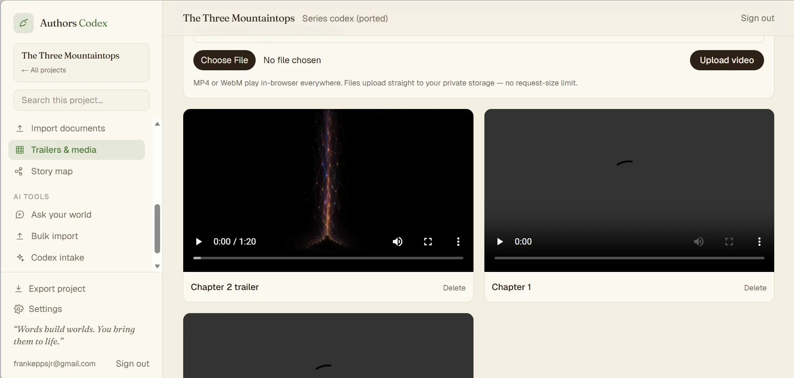
Michael makes several unrelated personal-data systems coherent through one interface and an AI synthesis layer. Sacred Breath is a progressive web app for structured breathing and fasting practice.
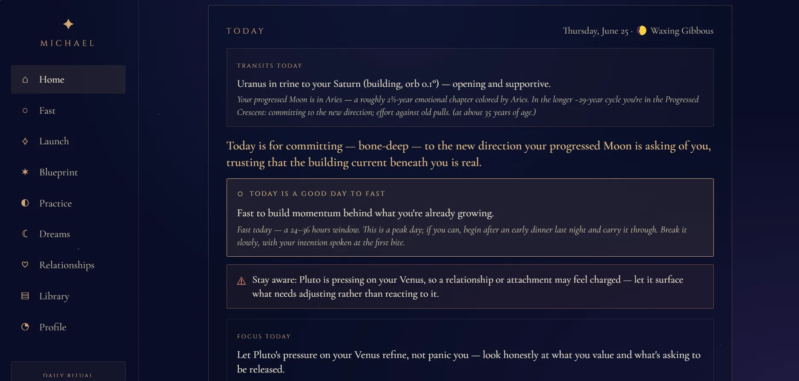
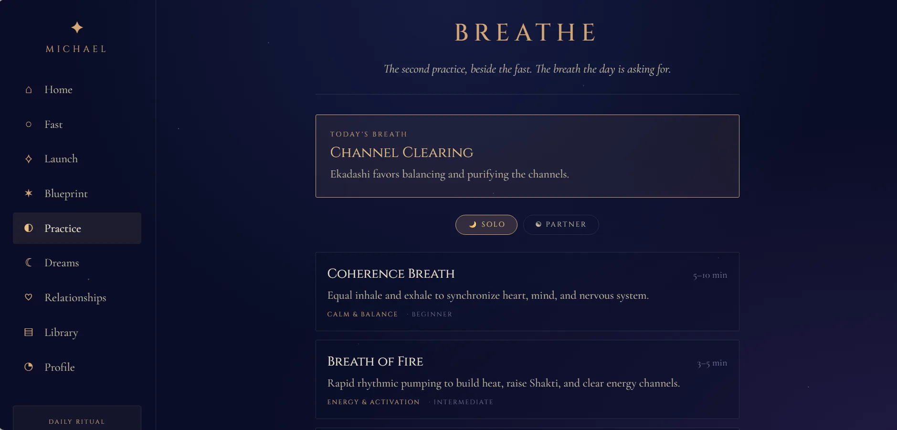
A real-time intraday decision-support system using Schwab market data, five signal families, Black-Scholes pricing, backtests, and EV/Kelly contract ranking.
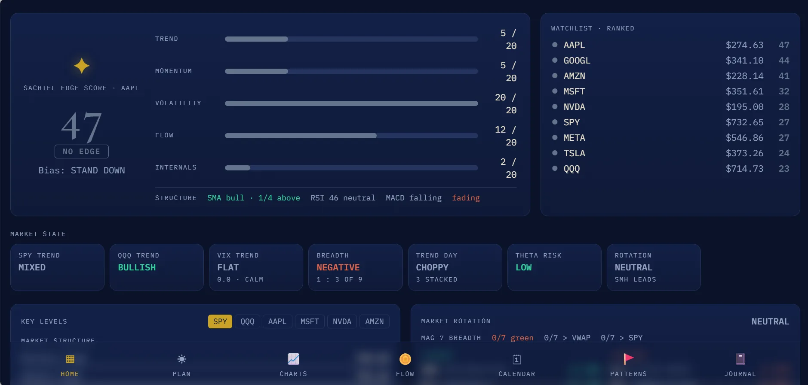
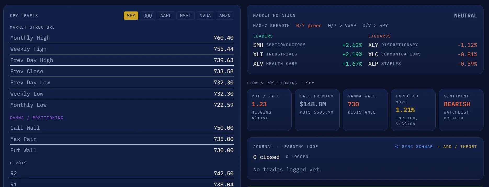
A tool-using strategist drafts, an independent critic evaluates, and a human approves before scheduled publishing. The studio adds structured content generation, video analysis, and an editing surface.

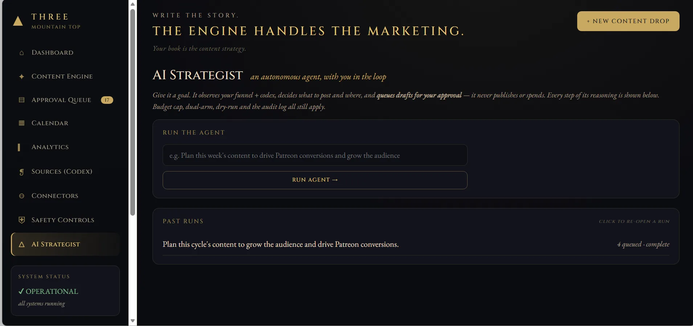
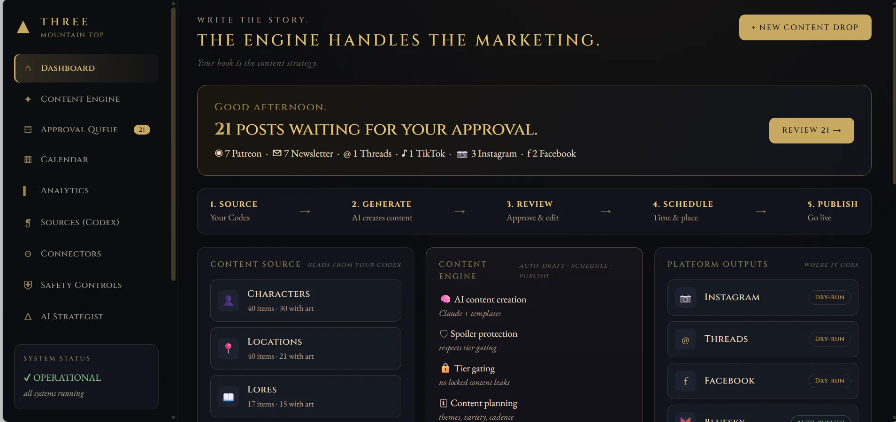
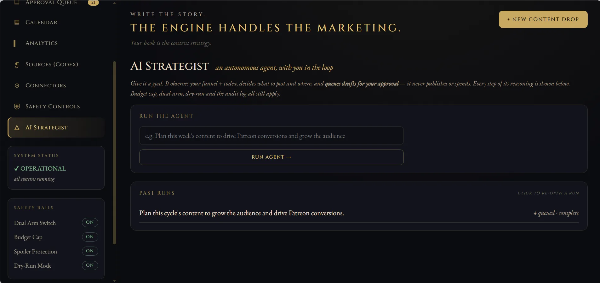
A membership platform that gates a codex, browser game, Godot/WASM narrative RPG, generated imagery, and lore-grounded chat through one signed session.
Open Three Mountaintops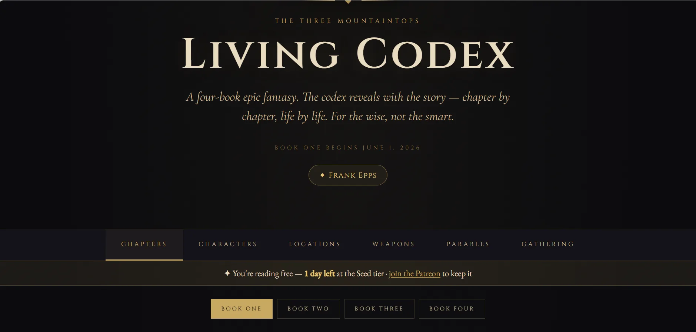
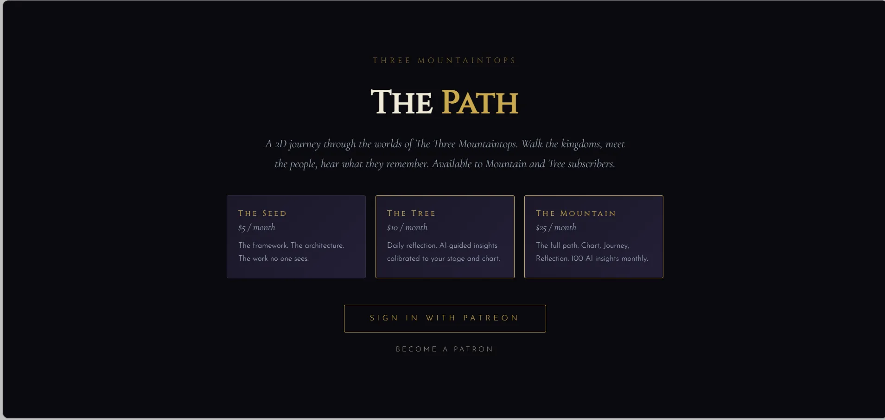
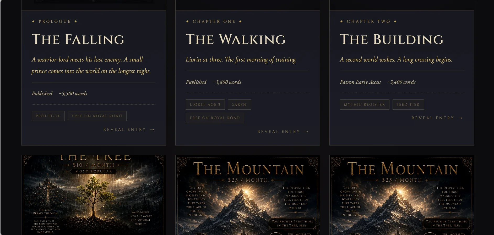
The full counted list, grouped by what each system demonstrates. No revenue or client-count claim is attached to the inventory.
Seven working systems
Seven working systems
Two working systems
Six working systems
Four working systems